Plank Run · Этап 0 · неделя 1 · версия от 19.10.2026
Доска направлений
Три визуальных направления и три черновика маскота Искры. За один день сгенерируй мудборды по готовым промптам, выбери направление и Искру. После этого я перепишу канон и все промпты под твой выбор (PLAN §8.1, журнал D14).
Что сделать владельцу — за один день
≈ 1,5–2 часа6 промптов × 2 картинки = 12лимит — до 30 картинок в день
Подготовка 5 мин
Открой приложение Gemini, включи создание изображений и проверь, что это Nano Banana Pro (если приложение даёт выбрать модель — выбери Pro). Рядом открой ChatGPT, если он у тебя есть. Ничего прикладывать не нужно: палитра уже записана в промптах.
Генерация ≈ 60 мин
По очереди для направлений 1 → 2 → 3:
в Gemini создай новый чат «PR · доска 1» (2, 3), нажми «Скопировать» у промпта Gemini, вставь и отправь;
сделай 2 картинки, максимум 4. Если всё мимо, не больше 3 попыток на промпт;
то же самое в ChatGPT с промптом ChatGPT: 1–2 картинки.
Проверка 15 мин
Пройди по каждой картинке коротким чек-листом ниже. Если картинка не прошла, перегенерируй. Лучшую всё равно отправь с пометкой, что не так.
Скачивание
Скачивай кнопкой «Скачать» в полном размере, а не скриншотом. Метку Gemini не обрезай и не закрашивай: в мудборде она допустима.
Отправка
В чат с ассистентом (основной путь): вложи файлы и подпиши, например MB1 gemini 1–2 · Nano Banana Pro · 20.10, MB1 chatgpt 1.
Или через GitHub: в репозитории переключи ветку на art-inbox (если её нет, впиши это имя в списке веток и нажми «Create branch»), открой папку art/inbox/ (если её нет, открой art/) → Add file → Upload files. Имена файлов: MB1__gemini__1.png, MB1__chatgpt__1.png. Дальше разложу сам.
Искра 10 мин
Посмотри три черновика Искры и выбери один. Можно смешать, например «форма от 3, свечение от 1».
Выбор 5 мин
Отметь «Мне нравится» у направлений, в блоке «Мой выбор» укажи главный вариант и Искру, напиши, почему, нажми «Скопировать мой выбор» и вставь в чат.
Важно
Записывай модель у каждой картинки. После дневного лимита Gemini молча переключается с Nano Banana Pro на обычный Nano Banana. Если приложение показывает другую модель или качество резко упало, допиши «обычный NB».
Записывай дату и название чата. Сидов нет, поэтому повторить картинку можно только по промпту, модели, дате и чату.
Метку не трогай: не вырезай, не закрашивай, не кадрируй.
Один чат — одно направление. Не смешивай промпты разных направлений в одном чате.
Не загружай фото людей и не дописывай в промпты имена художников, студий и брендов.
Если ChatGPT упёрся в лимит, пропусти его: хватит картинок из Gemini.
Заодно, если есть минута: сделай скриншот Gemini → Settings → Media watermark (есть ли переключатель) и напиши тариф ChatGPT. Это нужно для арт-недели.
Чек-лист картинки (коротко)
Нет текста: ни букв, ни цифр, ни логотипов, ни подписей. Метка Gemini в мудборде — можно.
Цвета как в палитре направления: сравни с образцами. Нет жёлто-сепийного налёта.
Главное читается за полсекунды: прищурься или отойди на 1,5 м.
Свет сверху слева, без четырёхлучевых звёздочек-бликов.
Ни на кого не похоже: известные персонажи, бренды, флаги, религиозные и политические символы.
Логика без ошибок: парные глаза, телефон экраном к коврику, нет лишних рук.
Что прислать к концу дня
MB1-G Gemini ×2
MB1-C ChatGPT ×1–2
MB2-G Gemini ×2
MB2-C ChatGPT ×1–2
MB3-G Gemini ×2
MB3-C ChatGPT ×1–2
Выбор текст из «Мой выбор»
Сравнение направлений (оценки из исследования design.md §3)
Критерий
1 · Неон
2 · Спорт
3 · Маскот
Мотивация
средне*
средне
высоко
Читаемость в игре
высоко
высоко
средне
Стоимость
низко
средне
высоко
Узнаваемость
средне*
низко
высоко
* Оценка дана для «Неоновой аркады» (A). Рекомендация «Неон + Искра» — это A, к которому добавлены тепло маскота из C на метаэкранах и HUD по дисциплине B. Мотивация и узнаваемость у неё должны быть выше, но это гипотеза: её проверят плейтесты.
Направление 1 · A Рекомендация
Неон + Искра
Тёмный неон прототипа в играх и тепло маскота на метаэкранах: светящийся шар из игр получает глаза, и ты играешь за Искру.
ночной
уютный
светящийся
игривый
сосредоточенный
Палитра
#0B0D17фонбаза
#161A33поверхность1,1:1 — карточки
#F2F4FFтекст17,7:1
#A3A9D1вторичный8,4:1
#7C6CFFбренд5,0:1; белый на нём 3,9 — только крупно
#A397FFбренд-текст, забота7,8:1
#5EF2C2норма ●, скин Искры13,8:1
#FFB547внимание ▲11,0:1
#FF5D7Aсрыв ✕6,6:1
#FFD25Eмонета, золото13,5:1
#4CC9FFинфо, щит10,2:1
#D8FF6Aсветлячок17,0:1
Контраст указан к фону #0B0D17 (норма для текста — 4,5:1). Мятный и янтарный между собой — всего 1,25:1, при дейтеранопии они сливаются. Поэтому у каждого состояния есть свой знак: ● ▲ ✕. Янтарный и коралловый в игре означают только состояние техники.
Шрифты
0:42
Держи ровно, ещё чуть-чуть
Камера видит лицо. Видео не покидает телефон. Oʻzbekcha: gʻalaba, oʻyin. 0123456789
Unbounded — цифры и заголовки · Onest — интерфейс (единственный с полным узбекским) · OFL 1.1
Плюсы и минусы
Лучше всего читается с пола и экономит заряд на OLED.
Продолжает прототип: игры и бренд не надо переделывать с нуля.
Искра — это и игровой объект (шар, курсор, свет банки), и маскот. Связь «я — Искра» понятна сразу.
Дёшево: SVG и CSS, без Rive и иллюстратора.
Может отпугнуть тех, кто не считает себя геймером.
Есть риск однообразия «всё тёмное и светится».
Свечение нагружает видеокарту, поэтому только из готового атласа, без shadowBlur.
Состояния нельзя передавать одним цветом: знак нужен всегда.
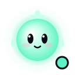
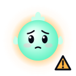
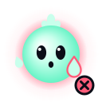
Светлячки12
0:42цель 1:00
Очки70
Техника в порядке
Таз выше
Таз провис
4
Таз провис
пауза, пока поза не вернётся
HUD: одна цифра и кольцо, полоса состояния по краю
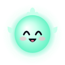
«Светлячки» без HUD: луна слева вверху, тихий центр, Искра светит из банки
Generate an image.
Stylized 2D game art for a calm night-time fitness game. Flat, vector-like shapes with soft smooth gradients, no outlines, rounded friendly forms, large clear silhouettes and very little fine detail. Palette: deep navy and indigo night tones (#0B0D17, #12152A, #161A33, #1E2347, #2E3566) with glowing accents only in mint #5EF2C2, violet #7C6CFF, soft lavender #A397FF, warm gold #FFD25E, sky cyan #4CC9FF and firefly lime #D8FF6A. Lighting: cool moonlight from the upper left with a thin lavender rim light on silhouette edges; warm light comes only from glowing objects. Every glow is a bright core with two soft round halos. Mood: cozy, quiet, hopeful, playful, readable from two meters away on a small screen.
Subject: Art direction mood board for a phone fitness game in which the player holds a plank and steers a glowing light with their body. Six equal panels in a 3 by 2 grid, separated by thin gaps of the dark background color, no borders and no captions. Panel 1: a calm night meadow with tall grass silhouettes, a small pale moon in the upper left and lime fireflies rising. Panel 2: the mascot, a perfectly round glowing mint light creature with two tall oval dark eyes with a small white highlight, a soft flame tuft of three rounded lobes on top, no arms and no legs, two tiny floating sparks as hands, smiling. Panel 3: a neon tunnel in one-point perspective with thin glowing violet edge lines and a soft glowing vanishing point. Panel 4: a glass jar on the grass slowly filling with the light of caught fireflies. Panel 5: a winding path of round glowing stepping stones across a dark meadow seen from above, like a game map. Panel 6: a gentle celebration of soft mint, violet and gold light rings and round light dots around an empty center.
Each panel has one clear main object that reads in half a second and a calm dark background.
Aspect ratio 3:2 (landscape). High resolution, crisp clean edges.
Avoid: any text, letters, numbers or symbols; logos and brand marks; watermarks and signatures; UI elements, frames, borders or card shapes; checkerboard transparency patterns; photorealism; glossy 3D plastic render; lens flares and four-pointed sparkle stars; heavy noise, film grain or paper texture; harsh black outlines; people, human faces and human hands.
ChatGPT MB1-C · «Ключевой кадр» вертикаль 2:3
Create one image. Format: tall portrait (2:3).
Stylized 2D game art for a calm night-time fitness game. Flat, vector-like shapes with soft smooth gradients, no outlines, rounded friendly forms, large clear silhouettes and very little fine detail. Palette: deep navy and indigo night tones (#0B0D17, #12152A, #161A33, #1E2347, #2E3566) with glowing accents only in mint #5EF2C2, violet #7C6CFF, soft lavender #A397FF, warm gold #FFD25E, sky cyan #4CC9FF and firefly lime #D8FF6A. Lighting: cool moonlight from the upper left with a thin lavender rim light on silhouette edges; warm light comes only from glowing objects. Every glow is a bright core with two soft round halos. Mood: cozy, quiet, hopeful, playful, readable from two meters away on a small screen.
Keep a cool color temperature with true deep navy blacks; no warm yellow or sepia cast.
Subject: Full-screen key frame of a calm night firefly-catching game as it would look on a phone held upright, drawn full-bleed with no device and no interface. A dark night meadow: a small pale moon with a soft halo in the upper left, a few faint stars, two layers of soft navy hills with a thin lavender rim light, tall grass silhouettes along the bottom. In the lower middle floats a round glass jar lit from inside by a round mint light creature with two tall oval dark eyes peeking through the glass and a soft flame tuft of three rounded lobes on its head; it has no arms and no legs. Around the jar drift a dozen small lime fireflies, one gold firefly and one pale blue firefly, each a bright core with two soft round halos.
Composition: the upper third stays calm, dark and empty; the glowing jar is the one main object and reads in half a second.
Do not add any elements that are not described.
Avoid: any text, letters, numbers or symbols; logos and brand marks; watermarks and signatures; UI elements, frames, borders or card shapes; checkerboard transparency patterns; photorealism; glossy 3D plastic render; lens flares and four-pointed sparkle stars; heavy noise, film grain or paper texture; harsh black outlines; people, human faces and human hands.
Направление 2 · B
Чистый спорт
Взрослый спокойный фитнес: графит, одна крупная цифра, кольца и полосы. Минимум украшений, максимум ясности.
собранный
уверенный
взрослый
чёткий
спокойная сила
Палитра
#0A0A0Bфонбаза
#17171Aповерхность1,1:1 — карточки
#FFFFFFтекст19,8:1
#A1A1AAвторичный7,7:1
#C6FF3Dлайм, норма ●, Искра16,8:1; на светлом 1,2 → #4D7A00
#38E1FFаква, забота12,6:1
#FFB547внимание ▲11,3:1
#FF5A36энергия → срыв ✕6,4:1
Контраст указан к фону #0A0A0B. Лайм и янтарь различаются всего на 1,5:1, поэтому знак ● ▲ ✕ обязателен. Красно-оранжевый «энергия» здесь отдан под срыв, а для акцентов остаются лайм и аква.
Шрифты
0:42
Держи ровно, ещё чуть-чуть
Камера видит лицо. Видео не покидает телефон. Oʻzbekcha: gʻalaba, oʻyin. 0123456789
Tektur — цифры и заголовки · Inter Tight — интерфейс · OFL 1.1
Плюсы и минусы
Выглядит как «взрослый» фитнес и вызывает доверие.
Проще сделать хорошо: мало графики, крупные цифры и кольца.
Отлично читается: лайм к фону 16,8:1.
Дисциплина HUD «одна цифра и кольцо» пригодится в любом направлении.
Мало игровой радости, а игры у нас главное.
Спор с гигантами фитнеса на их же поле.
Фото тренера стоят денег, а ИИ-людей мы не делаем. Остаются манекены и пиктограммы.
Искра становится значком, и привязанность к ней слабее.
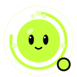
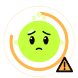
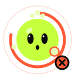
Светлячки12
0:42цель 1:00
Очки70
Техника в порядке
Таз выше
Таз провис
4
Таз провис
пауза, пока поза не вернётся
HUD: толстое кольцо, табличные цифры, без свечения
«Светлячки» без HUD: плоские формы, светлячки — точки со следом
Generate an image.
Clean, minimal graphic art for a serious home workout app built around holding a plank. Flat geometric shapes with crisp edges, generous negative space, no outlines and no texture; gradients only as one soft vignette; bold circular rings, arcs and straight stripes suggest timing and progress. Palette: near-black graphite (#0A0A0B, #17171A, #26262B), white #FFFFFF and muted grey #A1A1AA with only three accents: electric lime #C6FF3D, red-orange #FF5A36 and aqua #38E1FF. Lighting: neutral soft light from the upper left, no glow halos and no neon haze. Mood: focused, confident, adult, calm intensity, premium, readable from two meters away on a small screen.
Subject: Art direction mood board for a phone workout game in which the player holds a plank and steers a light with their body. Six equal panels in a 3 by 2 grid, separated by thin gaps of the dark background color, no borders and no captions. Panel 1: a faceless smooth mannequin made of light grey capsules with a plain round head holding a forearm plank on a dark floor, side view, a thin straight lime line running from head to heels. Panel 2: a thick lime circular ring almost closed around an empty dark center. Panel 3: a smartphone standing on a dark floor propped against a book, its blank screen glowing lime and aqua, an exercise mat leading to it. Panel 4: a minimal night meadow reduced to flat graphite hill shapes with small crisp lime dots as fireflies. Panel 5: a mascot reduced to a sign, a flat lime circle with two simple dark oval eyes, three small dots on top as a tuft and a thin aqua ring around it. Panel 6: three diagonal light stripes in lime, red-orange and aqua cutting across graphite, like a running track at speed.
Each panel has one clear main object that reads in half a second.
Aspect ratio 3:2 (landscape). High resolution, crisp clean edges.
Avoid: any text, letters, numbers or symbols; logos and brand marks, sportswear logos; watermarks and signatures; UI elements, buttons, frames or card shapes; checkerboard transparency patterns; photorealism and photographs; glossy 3D plastic render; lens flares and four-pointed sparkle stars; heavy noise, film grain or paper texture; harsh black outlines; realistic people, human faces, skin and hands.
ChatGPT MB2-C · «Ключевой кадр» вертикаль 2:3
Create one image. Format: tall portrait (2:3).
Clean, minimal graphic art for a serious home workout app built around holding a plank. Flat geometric shapes with crisp edges, generous negative space, no outlines and no texture; gradients only as one soft vignette; bold circular rings, arcs and straight stripes suggest timing and progress. Palette: near-black graphite (#0A0A0B, #17171A, #26262B), white #FFFFFF and muted grey #A1A1AA with only three accents: electric lime #C6FF3D, red-orange #FF5A36 and aqua #38E1FF. Lighting: neutral soft light from the upper left, no glow halos and no neon haze. Mood: focused, confident, adult, calm intensity, premium, readable from two meters away on a small screen.
Keep neutral graphite blacks; no warm yellow or sepia cast.
Subject: Full-screen key frame of a minimal firefly-catching workout game as it would look on a phone held upright, drawn full-bleed with no device and no interface. Deep graphite background with one very soft vignette; low flat dark grey hill shapes along the bottom; small crisp lime dots as fireflies drifting in gentle arcs with short motion trails, and one aqua dot. In the lower middle stands a simple rounded glass jar drawn with clean flat shapes; inside it a flat lime circle with two simple dark oval eyes and three small dots on top as a tuft. A thin lime arc of light sweeps around the upper third, open at the bottom.
Composition: the upper third stays calm and dark; the jar is the one main object and reads in half a second.
Do not add any elements that are not described.
Avoid: any text, letters, numbers or symbols; logos and brand marks, sportswear logos; watermarks and signatures; UI elements, buttons, frames or card shapes; checkerboard transparency patterns; photorealism and photographs; glossy 3D plastic render; lens flares and four-pointed sparkle stars; heavy noise, film grain or paper texture; harsh black outlines; realistic people, human faces, skin and hands.
Направление 3 · C
Дружелюбный маскот
Светлый тёплый мир с персонажем-компаньоном. Искра пружинит, болеет за тебя и празднует, а карта похожа на настольную игру.
добрый
ободряющий
игривый
тёплый
чуть озорной
Палитра
#FFF7ECфонбаза
#2B2350чернила, контур13,6:1
#6B6390вторичный5,2:1
#6A4BF0виноград, бренд5,1:1; белый на нём 5,4
#8C7BFFскин Искры3,1:1 — только заливка
#15804Bзелёный для текста4,7:1
#58D68Dнорма ● (заливка)1,7:1 — только со знаком
#FFC83Dсолнце → внимание ▲1,5:1 — только со знаком
#FF8A65коралл → срыв ✕2,2:1; текст — #C93A40, 4,8
#FF9EC4розовый, заботатолько заливка
Контраст указан к фону #FFF7EC. Цвета состояний на светлом фоне слабые, поэтому смысл несут знак чернилами и слово. Светлячки здесь фиолетовые: тёплые жёлтые спорили бы с янтарным ▲.
Шрифты
0:42
Держи ровно, ещё чуть-чуть
Камера видит лицо. Видео не покидает телефон. Oʻzbekcha: gʻalaba, oʻyin. 0123456789
Unbounded — заголовки · Nunito — интерфейс · мелкие цифры — Onest (у Nunito нет табличных цифр) · OFL 1.1
Плюсы и минусы
Сильнее всего мотивирует и привязывает.
Самая высокая узнаваемость, лучше всего подходит для промо.
Generate an image.
Warm, friendly 2D illustration for a cheerful home fitness game. Soft chunky rounded shapes with smooth even outlines in deep ink violet #2B2350 (never pure black), flat colors with one soft shade step, big readable silhouettes, bouncy squash-and-stretch poses. Palette: warm cream #FFF7EC, ink violet #2B2350, muted violet grey #6B6390, fresh green #58D68D, sunny yellow #FFC83D, soft coral #FF8A65, grape violet #6A4BF0 and light lavender #CFC6FF. Lighting: soft daylight from the upper left with a gentle warm bounce. Mood: kind, encouraging, playful, cozy, a little mischievous; made for teens and adults, never babyish; readable from two meters away on a small screen.
Subject: Art direction mood board for a phone fitness game in which the player holds a plank together with a friendly mascot. Six equal panels in a 3 by 2 grid, separated by thin gaps of the cream background color, no borders and no captions. Panel 1: a cozy dusk meadow under a lavender and peach sky with round green hills and small grape-violet fireflies. Panel 2: the mascot, a round chubby grape-violet light creature with big tall oval eyes, rosy cheeks and a flame tuft of three rounded lobes on top, no arms and no legs, two tiny floating sparks as hands, cheering. Panel 3: the same mascot squashed flat and wide on a tiny exercise mat with determined eyes, as if holding a plank. Panel 4: a winding path of round stepping stones with a small treasure chest, seen from above like a board game. Panel 5: a cozy room corner by day with an exercise mat, a smartphone standing on the floor propped against a book, a houseplant and a window. Panel 6: the mascot jumping for joy among round confetti dots and five-pointed stars with rounded tips.
Each panel has one clear main object that reads in half a second.
Aspect ratio 3:2 (landscape). High resolution, crisp clean edges.
Avoid: any text, letters, numbers or symbols; logos and brand marks; watermarks and signatures; UI elements, frames, borders or card shapes; checkerboard transparency patterns; photorealism; glossy 3D plastic render; lens flares and four-pointed sparkle stars; heavy noise, film grain or paper texture; pure black outlines; owls and green birds; people, human faces and human hands.
ChatGPT MB3-C · «Ключевой кадр» вертикаль 2:3
Create one image. Format: tall portrait (2:3).
Warm, friendly 2D illustration for a cheerful home fitness game. Soft chunky rounded shapes with smooth even outlines in deep ink violet #2B2350 (never pure black), flat colors with one soft shade step, big readable silhouettes, bouncy squash-and-stretch poses. Palette: warm cream #FFF7EC, ink violet #2B2350, muted violet grey #6B6390, fresh green #58D68D, sunny yellow #FFC83D, soft coral #FF8A65, grape violet #6A4BF0 and light lavender #CFC6FF. Lighting: soft daylight from the upper left with a gentle warm bounce. Mood: kind, encouraging, playful, cozy, a little mischievous; made for teens and adults, never babyish; readable from two meters away on a small screen.
Subject: Full-screen key frame of a friendly firefly-catching game as it would look on a phone held upright, drawn full-bleed with no device and no interface. A warm dusk meadow: cream and lavender sky, a pale round moon in the upper left, one small cloud, round green hills and chunky little flowers, all with smooth ink-violet outlines. In the lower middle stands a clear glass jar with a lavender lid; inside it the round grape-violet mascot with big tall oval eyes, rosy cheeks and a flame tuft of three rounded lobes glows gently and looks up; it has no arms and no legs. Small grape-violet fireflies with tiny white wings drift around the jar.
Composition: the upper third is calm open sky; the jar with the mascot is the one main object and reads in half a second.
Do not add any elements that are not described.
Avoid: any text, letters, numbers or symbols; logos and brand marks; watermarks and signatures; UI elements, frames, borders or card shapes; checkerboard transparency patterns; photorealism; glossy 3D plastic render; lens flares and four-pointed sparkle stars; heavy noise, film grain or paper texture; pure black outlines; owls and green birds; people, human faces and human hands.
Искра — три черновика
Геометрия у всех вариантов одна, из арт-библии: тело — круг r 36 на холсте 128, хохолок из трёх круглых лопастей (не четырёхлучевая звезда, которая похожа на логотип Gemini), глаза-эллипсы с бликом, рук и ног нет, жесты делают две искорки. Пол и возраст не считываются. Отличается только отрисовка, по одному варианту на направление. Это черновик: после выбора нарисую канон C4 — 14 настроений и 5 разворотов.
Пять основных настроений: покой (меню, моргает) · радость (поймала светлячка) · забота (после «Болит»: сердце у груди, ореол заботы — Искра сочувствует, а не грустит) · устала (флаг усталости, приплюснута) · праздник (цель, босс).
Три состояния техники: цвет ореола плюс знак и лицо — ● норма; ▲ внимание: брови домиком, Искра сжимается; ✕ срыв: глаза широко, искорка вперёд — «стоп».
Вариант 1 · «Огонёк» для направления 1
Светится: градиент от белого к мятному #5EF2C2, два мягких ореола цвета состояния, блик сверху слева. Тот же шар, что в «Тоннеле», только с глазами.
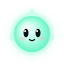
покойрадость
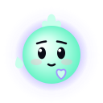
забота
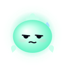
устала
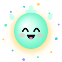
праздник● норма▲ внимание✕ срыв
24 px32 px48 px96 px
Вариант 2 · «Знак» для направления 2
Плоский лайм #C6FF3D без свечения. Вместо ореола — кольцо, как у таймера (полное в празднике), хохолок из трёх точек, без румянца. Строгий, читается как значок.
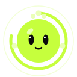
покойрадость
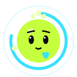
забота
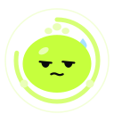
устала
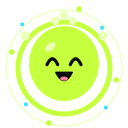
праздник● норма▲ внимание✕ срыв
24 px32 px48 px96 px
Вариант 3 · «Дружок» для направления 3
Контур чернилами #2B2350, глаза крупнее, двойной блик, румянец, тень одной ступенью, виноградный скин #8C7BFF. Самый тёплый, но рассчитан на светлый фон.
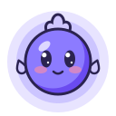
покойрадость
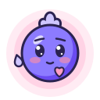
забота
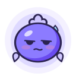
усталапраздник● норма▲ внимание✕ срыв
24 px32 px48 px96 px
Файлы: board/mascot/<вариант>-<настроение>.svg, каждый меньше 3 КБ, рисованный вектор без растра. Собраны одним скриптом build-mascot.mjs из одной геометрии. Анимация на странице — только CSS (дыхание 4 с, моргание, подскок); при «Уменьшить движение» её нет.
Мой выбор
Всё сохраняется только в этом браузере. Когда закончишь, нажми «Скопировать мой выбор» и вставь текст в чат с ассистентом.